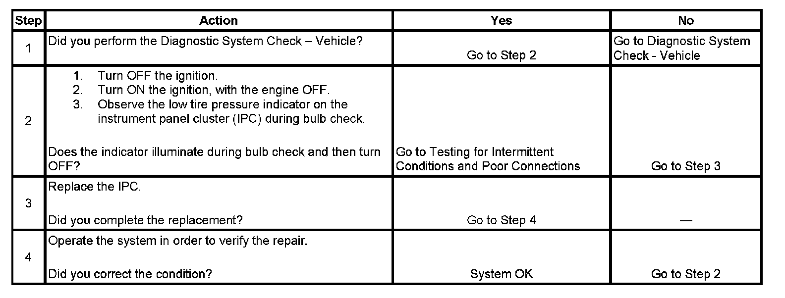

Operation CHARM
: Car repair manuals for everyone.
Home
>>
Cadillac
>>
2007
>>
Escalade ESV AWD V8-6.2L
>>
Repair and Diagnosis
>>
Steering and Suspension
>>
Wheels and Tires
>>
Tire Monitoring System
>>
Testing and Inspection
>>
Symptom Related Diagnostic Procedures
>>
Low Tire Pressure Indicator Inoperative
Low Tire Pressure Indicator Inoperative
Low Tire Pressure Indicator
Inoperative
Step 1 - Step 4:
